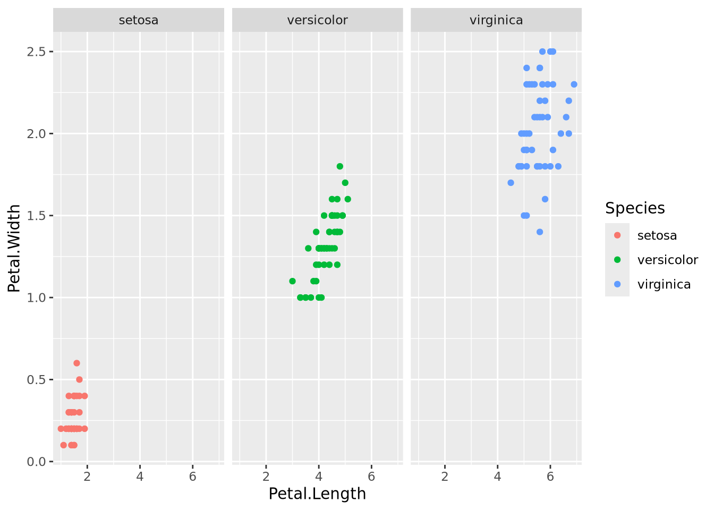
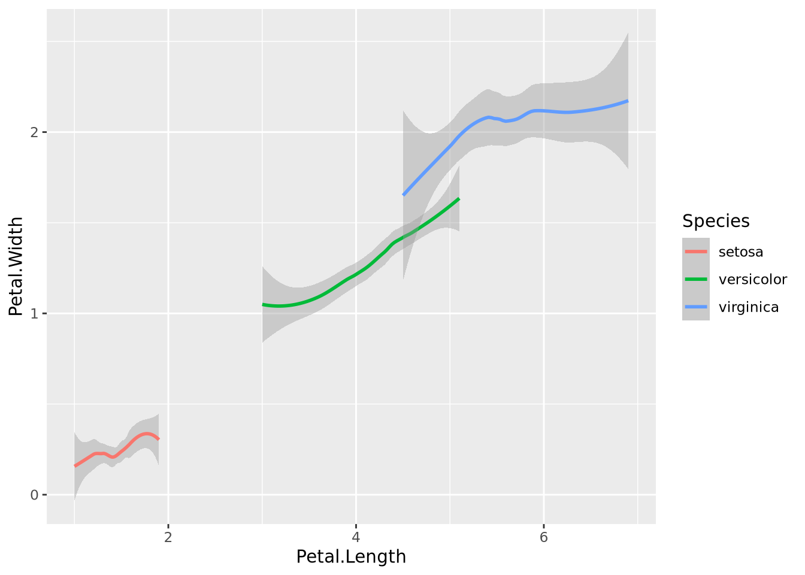

Code
install.packages("tidyverse") # only needed onceThomas Manke
See also: R for Data Science: https://r4ds.had.co.nz/
-- Attaching core tidyverse packages ------------------------ tidyverse 2.0.0 --
v dplyr 1.1.4 v readr 2.1.5
v forcats 1.0.0 v stringr 1.5.1
v ggplot2 3.5.0 v tibble 3.2.1
v lubridate 1.9.3 v tidyr 1.3.1
v purrr 1.0.2
-- Conflicts ------------------------------------------ tidyverse_conflicts() --
x dplyr::filter() masks stats::filter()
x dplyr::lag() masks stats::lag()
i Use the conflicted package (<http://conflicted.r-lib.org/>) to force all conflicts to become errors[1] "/__w/Rintro/Rintro/qmd"Rows: 6 Columns: 6
-- Column specification --------------------------------------------------------
Delimiter: "\t"
chr (2): GeneName, Description
dbl (3): Exp1, Exp2, Exp3
lgl (1): Planned
i Use `spec()` to retrieve the full column specification for this data.
i Specify the column types or set `show_col_types = FALSE` to quiet this message.# A tibble: 6 x 6
GeneName Description Exp1 Exp2 Exp3 Planned
<chr> <chr> <dbl> <dbl> <dbl> <lgl>
1 ABC unknown 1.2 1.5 1.3 NA
2 DEF1 <NA> 1.3 4.7 NA NA
3 5'XYZ pseudogene 50 20 12 NA
4 3'UVW <NA> 10 20 34 NA
5 Sep7 <NA> 20 NA 22 NA
6 Oct1 important 1 1 1 NA 'data.frame': 150 obs. of 5 variables:
$ Sepal.Length: num 5.1 4.9 4.7 4.6 5 5.4 4.6 5 4.4 4.9 ...
$ Sepal.Width : num 3.5 3 3.2 3.1 3.6 3.9 3.4 3.4 2.9 3.1 ...
$ Petal.Length: num 1.4 1.4 1.3 1.5 1.4 1.7 1.4 1.5 1.4 1.5 ...
$ Petal.Width : num 0.2 0.2 0.2 0.2 0.2 0.4 0.3 0.2 0.2 0.1 ...
$ Species : Factor w/ 3 levels "setosa","versicolor",..: 1 1 1 1 1 1 1 1 1 1 ... Sepal.Length Sepal.Width Petal.Length Petal.Width Species
1 5.1 3.5 1.4 0.2 setosa
2 4.9 3.0 1.4 0.2 setosa
3 4.7 3.2 1.3 0.2 setosa
4 4.6 3.1 1.5 0.2 setosa
5 5.0 3.6 1.4 0.2 setosa
6 5.4 3.9 1.7 0.4 setosa Sepal.Length Sepal.Width Petal.Length Petal.Width
1 5.1 3.5 1.4 0.2
2 4.9 3.0 1.4 0.2
3 4.7 3.2 1.3 0.2
4 4.6 3.1 1.5 0.2
5 5.0 3.6 1.4 0.2
6 5.4 3.9 1.7 0.4 Sepal.Length Petal.Length
1 5.1 1.4
2 4.9 1.4
3 4.7 1.3
4 4.6 1.5
5 5.0 1.4
6 5.4 1.7 Sepal.Length Sepal.Width Petal.Length Petal.Width Species
1 5.1 3.5 1.4 0.2 setosa
2 4.9 3.0 1.4 0.2 setosa
3 4.7 3.2 1.3 0.2 setosa Sepal.Length Sepal.Width Petal.Length Petal.Width Species
1 4.6 3.6 1 0.2 setosa Sepal.Length Sepal.Width Petal.Length Petal.Width Species
1 5.7 4.4 1.5 0.4 setosa
2 5.2 4.1 1.5 0.1 setosa
3 5.5 4.2 1.4 0.2 setosaSame data can come in various shapes:
Species Measurement Value
1 setosa Sepal.Length 5.1
2 setosa Sepal.Length 4.9
3 setosa Sepal.Length 4.7
4 setosa Sepal.Length 4.6
5 setosa Sepal.Length 5.0
6 setosa Sepal.Length 5.4
7 setosa Sepal.Length 4.6
8 setosa Sepal.Length 5.0
9 setosa Sepal.Length 4.4
10 setosa Sepal.Length 4.9
11 setosa Sepal.Length 5.4
12 setosa Sepal.Length 4.8
13 setosa Sepal.Length 4.8
14 setosa Sepal.Length 4.3
15 setosa Sepal.Length 5.8
16 setosa Sepal.Length 5.7
17 setosa Sepal.Length 5.4
18 setosa Sepal.Length 5.1
19 setosa Sepal.Length 5.7
20 setosa Sepal.Length 5.1
21 setosa Sepal.Length 5.4
22 setosa Sepal.Length 5.1
23 setosa Sepal.Length 4.6
24 setosa Sepal.Length 5.1
25 setosa Sepal.Length 4.8
26 setosa Sepal.Length 5.0
27 setosa Sepal.Length 5.0
28 setosa Sepal.Length 5.2
29 setosa Sepal.Length 5.2
30 setosa Sepal.Length 4.7
31 setosa Sepal.Length 4.8
32 setosa Sepal.Length 5.4
33 setosa Sepal.Length 5.2
34 setosa Sepal.Length 5.5
35 setosa Sepal.Length 4.9
36 setosa Sepal.Length 5.0
37 setosa Sepal.Length 5.5
38 setosa Sepal.Length 4.9
39 setosa Sepal.Length 4.4
40 setosa Sepal.Length 5.1
41 setosa Sepal.Length 5.0
42 setosa Sepal.Length 4.5
43 setosa Sepal.Length 4.4
44 setosa Sepal.Length 5.0
45 setosa Sepal.Length 5.1
46 setosa Sepal.Length 4.8
47 setosa Sepal.Length 5.1
48 setosa Sepal.Length 4.6
49 setosa Sepal.Length 5.3
50 setosa Sepal.Length 5.0
51 versicolor Sepal.Length 7.0
52 versicolor Sepal.Length 6.4
53 versicolor Sepal.Length 6.9
54 versicolor Sepal.Length 5.5
55 versicolor Sepal.Length 6.5
56 versicolor Sepal.Length 5.7
57 versicolor Sepal.Length 6.3
58 versicolor Sepal.Length 4.9
59 versicolor Sepal.Length 6.6
60 versicolor Sepal.Length 5.2
61 versicolor Sepal.Length 5.0
62 versicolor Sepal.Length 5.9
63 versicolor Sepal.Length 6.0
64 versicolor Sepal.Length 6.1
65 versicolor Sepal.Length 5.6
66 versicolor Sepal.Length 6.7
67 versicolor Sepal.Length 5.6
68 versicolor Sepal.Length 5.8
69 versicolor Sepal.Length 6.2
70 versicolor Sepal.Length 5.6
71 versicolor Sepal.Length 5.9
72 versicolor Sepal.Length 6.1
73 versicolor Sepal.Length 6.3
74 versicolor Sepal.Length 6.1
75 versicolor Sepal.Length 6.4
76 versicolor Sepal.Length 6.6
77 versicolor Sepal.Length 6.8
78 versicolor Sepal.Length 6.7
79 versicolor Sepal.Length 6.0
80 versicolor Sepal.Length 5.7
81 versicolor Sepal.Length 5.5
82 versicolor Sepal.Length 5.5
83 versicolor Sepal.Length 5.8
84 versicolor Sepal.Length 6.0
85 versicolor Sepal.Length 5.4
86 versicolor Sepal.Length 6.0
87 versicolor Sepal.Length 6.7
88 versicolor Sepal.Length 6.3
89 versicolor Sepal.Length 5.6
90 versicolor Sepal.Length 5.5
91 versicolor Sepal.Length 5.5
92 versicolor Sepal.Length 6.1
93 versicolor Sepal.Length 5.8
94 versicolor Sepal.Length 5.0
95 versicolor Sepal.Length 5.6
96 versicolor Sepal.Length 5.7
97 versicolor Sepal.Length 5.7
98 versicolor Sepal.Length 6.2
99 versicolor Sepal.Length 5.1
100 versicolor Sepal.Length 5.7
101 virginica Sepal.Length 6.3
102 virginica Sepal.Length 5.8
103 virginica Sepal.Length 7.1
104 virginica Sepal.Length 6.3
105 virginica Sepal.Length 6.5
106 virginica Sepal.Length 7.6
107 virginica Sepal.Length 4.9
108 virginica Sepal.Length 7.3
109 virginica Sepal.Length 6.7
110 virginica Sepal.Length 7.2
111 virginica Sepal.Length 6.5
112 virginica Sepal.Length 6.4
113 virginica Sepal.Length 6.8
114 virginica Sepal.Length 5.7
115 virginica Sepal.Length 5.8
116 virginica Sepal.Length 6.4
117 virginica Sepal.Length 6.5
118 virginica Sepal.Length 7.7
119 virginica Sepal.Length 7.7
120 virginica Sepal.Length 6.0
121 virginica Sepal.Length 6.9
122 virginica Sepal.Length 5.6
123 virginica Sepal.Length 7.7
124 virginica Sepal.Length 6.3
125 virginica Sepal.Length 6.7
126 virginica Sepal.Length 7.2
127 virginica Sepal.Length 6.2
128 virginica Sepal.Length 6.1
129 virginica Sepal.Length 6.4
130 virginica Sepal.Length 7.2
131 virginica Sepal.Length 7.4
132 virginica Sepal.Length 7.9
133 virginica Sepal.Length 6.4
134 virginica Sepal.Length 6.3
135 virginica Sepal.Length 6.1
136 virginica Sepal.Length 7.7
137 virginica Sepal.Length 6.3
138 virginica Sepal.Length 6.4
139 virginica Sepal.Length 6.0
140 virginica Sepal.Length 6.9
141 virginica Sepal.Length 6.7
142 virginica Sepal.Length 6.9
143 virginica Sepal.Length 5.8
144 virginica Sepal.Length 6.8
145 virginica Sepal.Length 6.7
146 virginica Sepal.Length 6.7
147 virginica Sepal.Length 6.3
148 virginica Sepal.Length 6.5
149 virginica Sepal.Length 6.2
150 virginica Sepal.Length 5.9
151 setosa Sepal.Width 3.5
152 setosa Sepal.Width 3.0
153 setosa Sepal.Width 3.2
154 setosa Sepal.Width 3.1
155 setosa Sepal.Width 3.6
156 setosa Sepal.Width 3.9
157 setosa Sepal.Width 3.4
158 setosa Sepal.Width 3.4
159 setosa Sepal.Width 2.9
160 setosa Sepal.Width 3.1
161 setosa Sepal.Width 3.7
162 setosa Sepal.Width 3.4
163 setosa Sepal.Width 3.0
164 setosa Sepal.Width 3.0
165 setosa Sepal.Width 4.0
166 setosa Sepal.Width 4.4
167 setosa Sepal.Width 3.9
168 setosa Sepal.Width 3.5
169 setosa Sepal.Width 3.8
170 setosa Sepal.Width 3.8
171 setosa Sepal.Width 3.4
172 setosa Sepal.Width 3.7
173 setosa Sepal.Width 3.6
174 setosa Sepal.Width 3.3
175 setosa Sepal.Width 3.4
176 setosa Sepal.Width 3.0
177 setosa Sepal.Width 3.4
178 setosa Sepal.Width 3.5
179 setosa Sepal.Width 3.4
180 setosa Sepal.Width 3.2
181 setosa Sepal.Width 3.1
182 setosa Sepal.Width 3.4
183 setosa Sepal.Width 4.1
184 setosa Sepal.Width 4.2
185 setosa Sepal.Width 3.1
186 setosa Sepal.Width 3.2
187 setosa Sepal.Width 3.5
188 setosa Sepal.Width 3.6
189 setosa Sepal.Width 3.0
190 setosa Sepal.Width 3.4
191 setosa Sepal.Width 3.5
192 setosa Sepal.Width 2.3
193 setosa Sepal.Width 3.2
194 setosa Sepal.Width 3.5
195 setosa Sepal.Width 3.8
196 setosa Sepal.Width 3.0
197 setosa Sepal.Width 3.8
198 setosa Sepal.Width 3.2
199 setosa Sepal.Width 3.7
200 setosa Sepal.Width 3.3
201 versicolor Sepal.Width 3.2
202 versicolor Sepal.Width 3.2
203 versicolor Sepal.Width 3.1
204 versicolor Sepal.Width 2.3
205 versicolor Sepal.Width 2.8
206 versicolor Sepal.Width 2.8
207 versicolor Sepal.Width 3.3
208 versicolor Sepal.Width 2.4
209 versicolor Sepal.Width 2.9
210 versicolor Sepal.Width 2.7
211 versicolor Sepal.Width 2.0
212 versicolor Sepal.Width 3.0
213 versicolor Sepal.Width 2.2
214 versicolor Sepal.Width 2.9
215 versicolor Sepal.Width 2.9
216 versicolor Sepal.Width 3.1
217 versicolor Sepal.Width 3.0
218 versicolor Sepal.Width 2.7
219 versicolor Sepal.Width 2.2
220 versicolor Sepal.Width 2.5
221 versicolor Sepal.Width 3.2
222 versicolor Sepal.Width 2.8
223 versicolor Sepal.Width 2.5
224 versicolor Sepal.Width 2.8
225 versicolor Sepal.Width 2.9
226 versicolor Sepal.Width 3.0
227 versicolor Sepal.Width 2.8
228 versicolor Sepal.Width 3.0
229 versicolor Sepal.Width 2.9
230 versicolor Sepal.Width 2.6
231 versicolor Sepal.Width 2.4
232 versicolor Sepal.Width 2.4
233 versicolor Sepal.Width 2.7
234 versicolor Sepal.Width 2.7
235 versicolor Sepal.Width 3.0
236 versicolor Sepal.Width 3.4
237 versicolor Sepal.Width 3.1
238 versicolor Sepal.Width 2.3
239 versicolor Sepal.Width 3.0
240 versicolor Sepal.Width 2.5
241 versicolor Sepal.Width 2.6
242 versicolor Sepal.Width 3.0
243 versicolor Sepal.Width 2.6
244 versicolor Sepal.Width 2.3
245 versicolor Sepal.Width 2.7
246 versicolor Sepal.Width 3.0
247 versicolor Sepal.Width 2.9
248 versicolor Sepal.Width 2.9
249 versicolor Sepal.Width 2.5
250 versicolor Sepal.Width 2.8
251 virginica Sepal.Width 3.3
252 virginica Sepal.Width 2.7
253 virginica Sepal.Width 3.0
254 virginica Sepal.Width 2.9
255 virginica Sepal.Width 3.0
256 virginica Sepal.Width 3.0
257 virginica Sepal.Width 2.5
258 virginica Sepal.Width 2.9
259 virginica Sepal.Width 2.5
260 virginica Sepal.Width 3.6
261 virginica Sepal.Width 3.2
262 virginica Sepal.Width 2.7
263 virginica Sepal.Width 3.0
264 virginica Sepal.Width 2.5
265 virginica Sepal.Width 2.8
266 virginica Sepal.Width 3.2
267 virginica Sepal.Width 3.0
268 virginica Sepal.Width 3.8
269 virginica Sepal.Width 2.6
270 virginica Sepal.Width 2.2
271 virginica Sepal.Width 3.2
272 virginica Sepal.Width 2.8
273 virginica Sepal.Width 2.8
274 virginica Sepal.Width 2.7
275 virginica Sepal.Width 3.3
276 virginica Sepal.Width 3.2
277 virginica Sepal.Width 2.8
278 virginica Sepal.Width 3.0
279 virginica Sepal.Width 2.8
280 virginica Sepal.Width 3.0
281 virginica Sepal.Width 2.8
282 virginica Sepal.Width 3.8
283 virginica Sepal.Width 2.8
284 virginica Sepal.Width 2.8
285 virginica Sepal.Width 2.6
286 virginica Sepal.Width 3.0
287 virginica Sepal.Width 3.4
288 virginica Sepal.Width 3.1
289 virginica Sepal.Width 3.0
290 virginica Sepal.Width 3.1
291 virginica Sepal.Width 3.1
292 virginica Sepal.Width 3.1
293 virginica Sepal.Width 2.7
294 virginica Sepal.Width 3.2
295 virginica Sepal.Width 3.3
296 virginica Sepal.Width 3.0
297 virginica Sepal.Width 2.5
298 virginica Sepal.Width 3.0
299 virginica Sepal.Width 3.4
300 virginica Sepal.Width 3.0
301 setosa Petal.Length 1.4
302 setosa Petal.Length 1.4
303 setosa Petal.Length 1.3
304 setosa Petal.Length 1.5
305 setosa Petal.Length 1.4
306 setosa Petal.Length 1.7
307 setosa Petal.Length 1.4
308 setosa Petal.Length 1.5
309 setosa Petal.Length 1.4
310 setosa Petal.Length 1.5
311 setosa Petal.Length 1.5
312 setosa Petal.Length 1.6
313 setosa Petal.Length 1.4
314 setosa Petal.Length 1.1
315 setosa Petal.Length 1.2
316 setosa Petal.Length 1.5
317 setosa Petal.Length 1.3
318 setosa Petal.Length 1.4
319 setosa Petal.Length 1.7
320 setosa Petal.Length 1.5
321 setosa Petal.Length 1.7
322 setosa Petal.Length 1.5
323 setosa Petal.Length 1.0
324 setosa Petal.Length 1.7
325 setosa Petal.Length 1.9
326 setosa Petal.Length 1.6
327 setosa Petal.Length 1.6
328 setosa Petal.Length 1.5
329 setosa Petal.Length 1.4
330 setosa Petal.Length 1.6
331 setosa Petal.Length 1.6
332 setosa Petal.Length 1.5
333 setosa Petal.Length 1.5
334 setosa Petal.Length 1.4
335 setosa Petal.Length 1.5
336 setosa Petal.Length 1.2
337 setosa Petal.Length 1.3
338 setosa Petal.Length 1.4
339 setosa Petal.Length 1.3
340 setosa Petal.Length 1.5
341 setosa Petal.Length 1.3
342 setosa Petal.Length 1.3
343 setosa Petal.Length 1.3
344 setosa Petal.Length 1.6
345 setosa Petal.Length 1.9
346 setosa Petal.Length 1.4
347 setosa Petal.Length 1.6
348 setosa Petal.Length 1.4
349 setosa Petal.Length 1.5
350 setosa Petal.Length 1.4
351 versicolor Petal.Length 4.7
352 versicolor Petal.Length 4.5
353 versicolor Petal.Length 4.9
354 versicolor Petal.Length 4.0
355 versicolor Petal.Length 4.6
356 versicolor Petal.Length 4.5
357 versicolor Petal.Length 4.7
358 versicolor Petal.Length 3.3
359 versicolor Petal.Length 4.6
360 versicolor Petal.Length 3.9
361 versicolor Petal.Length 3.5
362 versicolor Petal.Length 4.2
363 versicolor Petal.Length 4.0
364 versicolor Petal.Length 4.7
365 versicolor Petal.Length 3.6
366 versicolor Petal.Length 4.4
367 versicolor Petal.Length 4.5
368 versicolor Petal.Length 4.1
369 versicolor Petal.Length 4.5
370 versicolor Petal.Length 3.9
371 versicolor Petal.Length 4.8
372 versicolor Petal.Length 4.0
373 versicolor Petal.Length 4.9
374 versicolor Petal.Length 4.7
375 versicolor Petal.Length 4.3
376 versicolor Petal.Length 4.4
377 versicolor Petal.Length 4.8
378 versicolor Petal.Length 5.0
379 versicolor Petal.Length 4.5
380 versicolor Petal.Length 3.5
381 versicolor Petal.Length 3.8
382 versicolor Petal.Length 3.7
383 versicolor Petal.Length 3.9
384 versicolor Petal.Length 5.1
385 versicolor Petal.Length 4.5
386 versicolor Petal.Length 4.5
387 versicolor Petal.Length 4.7
388 versicolor Petal.Length 4.4
389 versicolor Petal.Length 4.1
390 versicolor Petal.Length 4.0
391 versicolor Petal.Length 4.4
392 versicolor Petal.Length 4.6
393 versicolor Petal.Length 4.0
394 versicolor Petal.Length 3.3
395 versicolor Petal.Length 4.2
396 versicolor Petal.Length 4.2
397 versicolor Petal.Length 4.2
398 versicolor Petal.Length 4.3
399 versicolor Petal.Length 3.0
400 versicolor Petal.Length 4.1
401 virginica Petal.Length 6.0
402 virginica Petal.Length 5.1
403 virginica Petal.Length 5.9
404 virginica Petal.Length 5.6
405 virginica Petal.Length 5.8
406 virginica Petal.Length 6.6
407 virginica Petal.Length 4.5
408 virginica Petal.Length 6.3
409 virginica Petal.Length 5.8
410 virginica Petal.Length 6.1
411 virginica Petal.Length 5.1
412 virginica Petal.Length 5.3
413 virginica Petal.Length 5.5
414 virginica Petal.Length 5.0
415 virginica Petal.Length 5.1
416 virginica Petal.Length 5.3
417 virginica Petal.Length 5.5
418 virginica Petal.Length 6.7
419 virginica Petal.Length 6.9
420 virginica Petal.Length 5.0
421 virginica Petal.Length 5.7
422 virginica Petal.Length 4.9
423 virginica Petal.Length 6.7
424 virginica Petal.Length 4.9
425 virginica Petal.Length 5.7
426 virginica Petal.Length 6.0
427 virginica Petal.Length 4.8
428 virginica Petal.Length 4.9
429 virginica Petal.Length 5.6
430 virginica Petal.Length 5.8
431 virginica Petal.Length 6.1
432 virginica Petal.Length 6.4
433 virginica Petal.Length 5.6
434 virginica Petal.Length 5.1
435 virginica Petal.Length 5.6
436 virginica Petal.Length 6.1
437 virginica Petal.Length 5.6
438 virginica Petal.Length 5.5
439 virginica Petal.Length 4.8
440 virginica Petal.Length 5.4
441 virginica Petal.Length 5.6
442 virginica Petal.Length 5.1
443 virginica Petal.Length 5.1
444 virginica Petal.Length 5.9
445 virginica Petal.Length 5.7
446 virginica Petal.Length 5.2
447 virginica Petal.Length 5.0
448 virginica Petal.Length 5.2
449 virginica Petal.Length 5.4
450 virginica Petal.Length 5.1
451 setosa Petal.Width 0.2
452 setosa Petal.Width 0.2
453 setosa Petal.Width 0.2
454 setosa Petal.Width 0.2
455 setosa Petal.Width 0.2
456 setosa Petal.Width 0.4
457 setosa Petal.Width 0.3
458 setosa Petal.Width 0.2
459 setosa Petal.Width 0.2
460 setosa Petal.Width 0.1
461 setosa Petal.Width 0.2
462 setosa Petal.Width 0.2
463 setosa Petal.Width 0.1
464 setosa Petal.Width 0.1
465 setosa Petal.Width 0.2
466 setosa Petal.Width 0.4
467 setosa Petal.Width 0.4
468 setosa Petal.Width 0.3
469 setosa Petal.Width 0.3
470 setosa Petal.Width 0.3
471 setosa Petal.Width 0.2
472 setosa Petal.Width 0.4
473 setosa Petal.Width 0.2
474 setosa Petal.Width 0.5
475 setosa Petal.Width 0.2
476 setosa Petal.Width 0.2
477 setosa Petal.Width 0.4
478 setosa Petal.Width 0.2
479 setosa Petal.Width 0.2
480 setosa Petal.Width 0.2
481 setosa Petal.Width 0.2
482 setosa Petal.Width 0.4
483 setosa Petal.Width 0.1
484 setosa Petal.Width 0.2
485 setosa Petal.Width 0.2
486 setosa Petal.Width 0.2
487 setosa Petal.Width 0.2
488 setosa Petal.Width 0.1
489 setosa Petal.Width 0.2
490 setosa Petal.Width 0.2
491 setosa Petal.Width 0.3
492 setosa Petal.Width 0.3
493 setosa Petal.Width 0.2
494 setosa Petal.Width 0.6
495 setosa Petal.Width 0.4
496 setosa Petal.Width 0.3
497 setosa Petal.Width 0.2
498 setosa Petal.Width 0.2
499 setosa Petal.Width 0.2
500 setosa Petal.Width 0.2
501 versicolor Petal.Width 1.4
502 versicolor Petal.Width 1.5
503 versicolor Petal.Width 1.5
504 versicolor Petal.Width 1.3
505 versicolor Petal.Width 1.5
506 versicolor Petal.Width 1.3
507 versicolor Petal.Width 1.6
508 versicolor Petal.Width 1.0
509 versicolor Petal.Width 1.3
510 versicolor Petal.Width 1.4
511 versicolor Petal.Width 1.0
512 versicolor Petal.Width 1.5
513 versicolor Petal.Width 1.0
514 versicolor Petal.Width 1.4
515 versicolor Petal.Width 1.3
516 versicolor Petal.Width 1.4
517 versicolor Petal.Width 1.5
518 versicolor Petal.Width 1.0
519 versicolor Petal.Width 1.5
520 versicolor Petal.Width 1.1
521 versicolor Petal.Width 1.8
522 versicolor Petal.Width 1.3
523 versicolor Petal.Width 1.5
524 versicolor Petal.Width 1.2
525 versicolor Petal.Width 1.3
526 versicolor Petal.Width 1.4
527 versicolor Petal.Width 1.4
528 versicolor Petal.Width 1.7
529 versicolor Petal.Width 1.5
530 versicolor Petal.Width 1.0
531 versicolor Petal.Width 1.1
532 versicolor Petal.Width 1.0
533 versicolor Petal.Width 1.2
534 versicolor Petal.Width 1.6
535 versicolor Petal.Width 1.5
536 versicolor Petal.Width 1.6
537 versicolor Petal.Width 1.5
538 versicolor Petal.Width 1.3
539 versicolor Petal.Width 1.3
540 versicolor Petal.Width 1.3
541 versicolor Petal.Width 1.2
542 versicolor Petal.Width 1.4
543 versicolor Petal.Width 1.2
544 versicolor Petal.Width 1.0
545 versicolor Petal.Width 1.3
546 versicolor Petal.Width 1.2
547 versicolor Petal.Width 1.3
548 versicolor Petal.Width 1.3
549 versicolor Petal.Width 1.1
550 versicolor Petal.Width 1.3
551 virginica Petal.Width 2.5
552 virginica Petal.Width 1.9
553 virginica Petal.Width 2.1
554 virginica Petal.Width 1.8
555 virginica Petal.Width 2.2
556 virginica Petal.Width 2.1
557 virginica Petal.Width 1.7
558 virginica Petal.Width 1.8
559 virginica Petal.Width 1.8
560 virginica Petal.Width 2.5
561 virginica Petal.Width 2.0
562 virginica Petal.Width 1.9
563 virginica Petal.Width 2.1
564 virginica Petal.Width 2.0
565 virginica Petal.Width 2.4
566 virginica Petal.Width 2.3
567 virginica Petal.Width 1.8
568 virginica Petal.Width 2.2
569 virginica Petal.Width 2.3
570 virginica Petal.Width 1.5
571 virginica Petal.Width 2.3
572 virginica Petal.Width 2.0
573 virginica Petal.Width 2.0
574 virginica Petal.Width 1.8
575 virginica Petal.Width 2.1
576 virginica Petal.Width 1.8
577 virginica Petal.Width 1.8
578 virginica Petal.Width 1.8
579 virginica Petal.Width 2.1
580 virginica Petal.Width 1.6
581 virginica Petal.Width 1.9
582 virginica Petal.Width 2.0
583 virginica Petal.Width 2.2
584 virginica Petal.Width 1.5
585 virginica Petal.Width 1.4
586 virginica Petal.Width 2.3
587 virginica Petal.Width 2.4
588 virginica Petal.Width 1.8
589 virginica Petal.Width 1.8
590 virginica Petal.Width 2.1
591 virginica Petal.Width 2.4
592 virginica Petal.Width 2.3
593 virginica Petal.Width 1.9
594 virginica Petal.Width 2.3
595 virginica Petal.Width 2.5
596 virginica Petal.Width 2.3
597 virginica Petal.Width 1.9
598 virginica Petal.Width 2.0
599 virginica Petal.Width 2.3
600 virginica Petal.Width 1.8 Sepal.Length Sepal.Width Petal.Length Petal.Width Species
1 7.7 2.6 6.9 2.3 virginica
2 7.7 3.8 6.7 2.2 virginica
3 7.7 2.8 6.7 2.0 virginica
4 7.6 3.0 6.6 2.1 virginica Species
1 setosa
2 versicolor
3 virginica Species n
1 setosa 50
2 versicolor 50
3 virginica 50Task count Petal.Length
Sepal.Length Sepal.Width Petal.Length Petal.Width Species pl_m
1 5.1 3.5 1.4 0.2 setosa 0.014
2 4.9 3.0 1.4 0.2 setosa 0.014
3 4.7 3.2 1.3 0.2 setosa 0.013
4 4.6 3.1 1.5 0.2 setosa 0.015
5 5.0 3.6 1.4 0.2 setosa 0.014
6 5.4 3.9 1.7 0.4 setosa 0.017 Sepal.Length Sepal.Width Petal.Length Petal.Width Species PLr
1 4.6 3.6 1.0 0.2 setosa 1.0
2 4.3 3.0 1.1 0.1 setosa 2.0
3 5.8 4.0 1.2 0.2 setosa 3.5
4 5.0 3.2 1.2 0.2 setosa 3.5
5 4.7 3.2 1.3 0.2 setosa 8.0
6 5.4 3.9 1.3 0.4 setosa 8.0# A tibble: 3 x 2
Species m
<fct> <dbl>
1 setosa 1.46
2 versicolor 4.26
3 virginica 5.55Task1 Plot the standard deviation [hint: ?sd] of Petal.Length within each group
Task2 Plot the mean(Petal.Length) against the mean(Petal.Width) where the means are for each Species
# create two data sets for Sepal and Petal measurments, but add ID to keep track of the flow-ID
irisS=iris%>% select(matches("Sepal")) %>% mutate(id=row_number())
irisP=iris%>% select(matches("Petal")) %>% mutate(id=row_number()) %>% sample_frac(0.05) # second plant is subsampled
left_join(irisP,irisS, by="id") Petal.Length Petal.Width id Sepal.Length Sepal.Width
1 1.3 0.2 3 4.7 3.2
2 1.3 0.3 42 4.5 2.3
3 6.7 2.2 118 7.7 3.8
4 1.7 0.4 6 5.4 3.9
5 4.7 1.4 64 6.1 2.9
6 5.5 2.1 113 6.8 3.0
7 5.4 2.3 149 6.2 3.4
8 4.2 1.5 62 5.9 3.0 Petal.Length Petal.Width id Sepal.Length Sepal.Width
1 1.3 0.2 3 4.7 3.2
2 1.3 0.3 42 4.5 2.3
3 6.7 2.2 118 7.7 3.8
4 1.7 0.4 6 5.4 3.9
5 4.7 1.4 64 6.1 2.9
6 5.5 2.1 113 6.8 3.0
7 5.4 2.3 149 6.2 3.4
8 4.2 1.5 62 5.9 3.0
9 NA NA 1 5.1 3.5
10 NA NA 2 4.9 3.0
11 NA NA 4 4.6 3.1
12 NA NA 5 5.0 3.6
13 NA NA 7 4.6 3.4
14 NA NA 8 5.0 3.4
15 NA NA 9 4.4 2.9
16 NA NA 10 4.9 3.1
17 NA NA 11 5.4 3.7
18 NA NA 12 4.8 3.4
19 NA NA 13 4.8 3.0
20 NA NA 14 4.3 3.0
21 NA NA 15 5.8 4.0
22 NA NA 16 5.7 4.4
23 NA NA 17 5.4 3.9
24 NA NA 18 5.1 3.5
25 NA NA 19 5.7 3.8
26 NA NA 20 5.1 3.8
27 NA NA 21 5.4 3.4
28 NA NA 22 5.1 3.7
29 NA NA 23 4.6 3.6
30 NA NA 24 5.1 3.3
31 NA NA 25 4.8 3.4
32 NA NA 26 5.0 3.0
33 NA NA 27 5.0 3.4
34 NA NA 28 5.2 3.5
35 NA NA 29 5.2 3.4
36 NA NA 30 4.7 3.2
37 NA NA 31 4.8 3.1
38 NA NA 32 5.4 3.4
39 NA NA 33 5.2 4.1
40 NA NA 34 5.5 4.2
41 NA NA 35 4.9 3.1
42 NA NA 36 5.0 3.2
43 NA NA 37 5.5 3.5
44 NA NA 38 4.9 3.6
45 NA NA 39 4.4 3.0
46 NA NA 40 5.1 3.4
47 NA NA 41 5.0 3.5
48 NA NA 43 4.4 3.2
49 NA NA 44 5.0 3.5
50 NA NA 45 5.1 3.8
51 NA NA 46 4.8 3.0
52 NA NA 47 5.1 3.8
53 NA NA 48 4.6 3.2
54 NA NA 49 5.3 3.7
55 NA NA 50 5.0 3.3
56 NA NA 51 7.0 3.2
57 NA NA 52 6.4 3.2
58 NA NA 53 6.9 3.1
59 NA NA 54 5.5 2.3
60 NA NA 55 6.5 2.8
61 NA NA 56 5.7 2.8
62 NA NA 57 6.3 3.3
63 NA NA 58 4.9 2.4
64 NA NA 59 6.6 2.9
65 NA NA 60 5.2 2.7
66 NA NA 61 5.0 2.0
67 NA NA 63 6.0 2.2
68 NA NA 65 5.6 2.9
69 NA NA 66 6.7 3.1
70 NA NA 67 5.6 3.0
71 NA NA 68 5.8 2.7
72 NA NA 69 6.2 2.2
73 NA NA 70 5.6 2.5
74 NA NA 71 5.9 3.2
75 NA NA 72 6.1 2.8
76 NA NA 73 6.3 2.5
77 NA NA 74 6.1 2.8
78 NA NA 75 6.4 2.9
79 NA NA 76 6.6 3.0
80 NA NA 77 6.8 2.8
81 NA NA 78 6.7 3.0
82 NA NA 79 6.0 2.9
83 NA NA 80 5.7 2.6
84 NA NA 81 5.5 2.4
85 NA NA 82 5.5 2.4
86 NA NA 83 5.8 2.7
87 NA NA 84 6.0 2.7
88 NA NA 85 5.4 3.0
89 NA NA 86 6.0 3.4
90 NA NA 87 6.7 3.1
91 NA NA 88 6.3 2.3
92 NA NA 89 5.6 3.0
93 NA NA 90 5.5 2.5
94 NA NA 91 5.5 2.6
95 NA NA 92 6.1 3.0
96 NA NA 93 5.8 2.6
97 NA NA 94 5.0 2.3
98 NA NA 95 5.6 2.7
99 NA NA 96 5.7 3.0
100 NA NA 97 5.7 2.9
101 NA NA 98 6.2 2.9
102 NA NA 99 5.1 2.5
103 NA NA 100 5.7 2.8
104 NA NA 101 6.3 3.3
105 NA NA 102 5.8 2.7
106 NA NA 103 7.1 3.0
107 NA NA 104 6.3 2.9
108 NA NA 105 6.5 3.0
109 NA NA 106 7.6 3.0
110 NA NA 107 4.9 2.5
111 NA NA 108 7.3 2.9
112 NA NA 109 6.7 2.5
113 NA NA 110 7.2 3.6
114 NA NA 111 6.5 3.2
115 NA NA 112 6.4 2.7
116 NA NA 114 5.7 2.5
117 NA NA 115 5.8 2.8
118 NA NA 116 6.4 3.2
119 NA NA 117 6.5 3.0
120 NA NA 119 7.7 2.6
121 NA NA 120 6.0 2.2
122 NA NA 121 6.9 3.2
123 NA NA 122 5.6 2.8
124 NA NA 123 7.7 2.8
125 NA NA 124 6.3 2.7
126 NA NA 125 6.7 3.3
127 NA NA 126 7.2 3.2
128 NA NA 127 6.2 2.8
129 NA NA 128 6.1 3.0
130 NA NA 129 6.4 2.8
131 NA NA 130 7.2 3.0
132 NA NA 131 7.4 2.8
133 NA NA 132 7.9 3.8
134 NA NA 133 6.4 2.8
135 NA NA 134 6.3 2.8
136 NA NA 135 6.1 2.6
137 NA NA 136 7.7 3.0
138 NA NA 137 6.3 3.4
139 NA NA 138 6.4 3.1
140 NA NA 139 6.0 3.0
141 NA NA 140 6.9 3.1
142 NA NA 141 6.7 3.1
143 NA NA 142 6.9 3.1
144 NA NA 143 5.8 2.7
145 NA NA 144 6.8 3.2
146 NA NA 145 6.7 3.3
147 NA NA 146 6.7 3.0
148 NA NA 147 6.3 2.5
149 NA NA 148 6.5 3.0
150 NA NA 150 5.9 3.0 Petal.Length Petal.Width id Sepal.Length Sepal.Width
1 1.3 0.2 3 4.7 3.2
2 1.3 0.3 42 4.5 2.3
3 6.7 2.2 118 7.7 3.8
4 1.7 0.4 6 5.4 3.9
5 4.7 1.4 64 6.1 2.9
6 5.5 2.1 113 6.8 3.0
7 5.4 2.3 149 6.2 3.4
8 4.2 1.5 62 5.9 3.0Task Explore the resulting data

`geom_smooth()` using method = 'loess' and formula = 'y ~ x'
---
title: 'S02: Tidyverse'
author: "Thomas Manke"
categories:
- tidyverse
---
```{r setup, include=FALSE}
knitr::opts_chunk$set(echo = TRUE)
knitr::opts_chunk$set(cache=TRUE)
```
# Tidyverse
See also: R for Data Science: https://r4ds.had.co.nz/
```{r installation, eval=FALSE}
install.packages("tidyverse") # only needed once
```
```{r setup_package}
library("tidyverse")
```
```{r read_data}
getwd() # know your working directory
file="data/GeneList.tsv" # set file name relative to working directory
D = read_tsv(file, comment="%")
D
```
# A new style: Pipes
```{r tidyverse_style}
iris %>% str()
iris %>% head()
```
# Selection
```{r selection}
# column selection / unselection
iris %>% select(-Species) %>% head()
iris %>% select(matches("Length")) %>% head()
# row selection
iris %>% slice(-c(4:150))
iris %>% filter(Petal.Length==min(Petal.Length))
iris %>% filter(Petal.Length<2 & Sepal.Width>4)
```
# Data Munging and Reshaping
Same data can come in various shapes:
```{r }
iris %>% gather(Measurement, Value, -Species) # convert between wide and long forms
```
# Sorting and Ordering
```{r}
iris %>% top_n(4, Petal.Length) %>% arrange(desc(Petal.Length))
```
```{r counting}
iris %>% distinct(Species)
iris %>% count(Species)
```
**Task** count Petal.Length
# Adding data
```{r adding_data}
# a silly example: convert Petal.Length from centimeters --> meters
iris %>% mutate(pl_m=Petal.Length/100) %>% head()
# perhaps more useful
iris %>% mutate(PLr=rank(Petal.Length)) %>% arrange(Petal.Length) %>% head()
```
# Grouping and Summarizing
```{r group_and_sum}
iris %>% group_by(Species) %>% summarise(m=mean(Petal.Length))
```
**Task1** Plot the standard deviation [hint: ?sd] of Petal.Length within each group
**Task2** Plot the mean(Petal.Length) against the mean(Petal.Width) where the means are for each Species
# Merging Data frames
```{r}
# create two data sets for Sepal and Petal measurments, but add ID to keep track of the flow-ID
irisS=iris%>% select(matches("Sepal")) %>% mutate(id=row_number())
irisP=iris%>% select(matches("Petal")) %>% mutate(id=row_number()) %>% sample_frac(0.05) # second plant is subsampled
left_join(irisP,irisS, by="id")
right_join(irisP,irisS, by="id")
inner_join(irisP,irisS, by="id")
```
**Task** Explore the resulting data
# ggplot: Powerful plotting
```{r ggplot}
g = ggplot(iris, aes(x=Petal.Length, y=Petal.Width, colour=Species))
g + geom_point() +
geom_smooth(method="lm", se=TRUE, color="yellow") +
geom_smooth(method="loess", colour="orange")
```
# Grouping
```{r group}
g + geom_point() + facet_grid(~Species) # arrange subplot by categorical variable, try setting sclaes="free"
g + geom_smooth(aes(group=Species)) # smooth based on group defined by species
```
```{r other}
g = ggplot(iris, aes(x=Species, y=Petal.Width, colour=Species))
g + geom_violin() +
scale_x_discrete(limits=c("versicolor", "setosa","virginica")) # change order
```